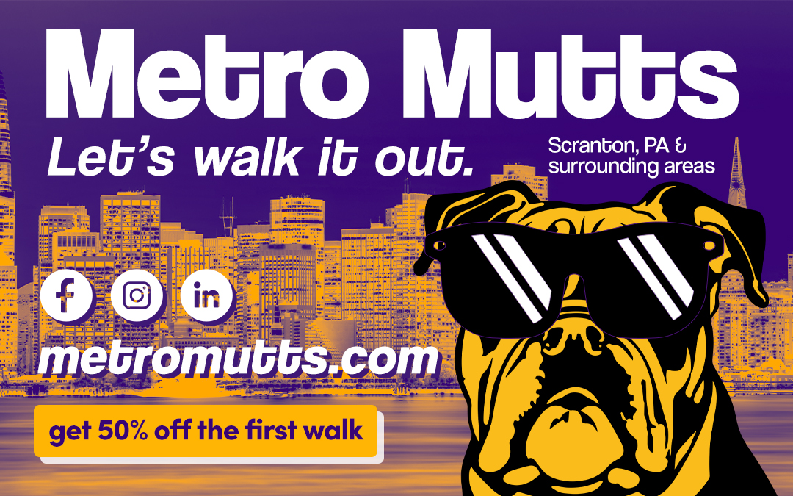

Social Media Ad Campaign
For this project I chose to create a series of social media ads.
I am not a social media person, so I chose this project to branch
out from my normal design interests.
These ads are for a dog walker in the city so I started with a cityscape
image for the background. I added a gradient map to give it a duo-tone
effect. I chose this effect so I can tie all of the ads together with
the same style. The simple, flat drawing of the dogs are an eye catching
image that I thought should be prominent to draw attention. The sunglasses
are copied in as a shape. Using a selection of the highlights on the
glasses shape, I added a blank layer and using a brush, filled in with
white (I had some trouble, see explanation below). After adding the glasses,
I decided to fill in the transparent areas in the dog’s face to help it
stand out. I added a blank layer behind the dog layer and used the brush
tool. I used a color fill layer style on those painted layers to adjust the
colors on each ad to better match the background. On the Golden Retriever
& Collie ads, I used the perspective transform tool to adjust the sunglasses
to the angle of the dog’s face. After adding all of the text, I decided to
add a rectangle behind the discount info so it could be identified as a button
to be linked to the website in the future. The social media icons were vectors
that I pasted in as shapes but I want the logos to be transparent, so I masked
out the logos from the circles and changed the circle color to stand out on each ad.